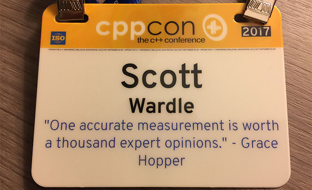

Belated review of CPPCON 2017

This year I did my 2nd CPPCON presentation this last September. It was a topic that is getting more and more important, packages and modules but I will talk about that later. You can see my presentation here. For now it is January and most people have done their CPPCON write up months ago so lets do that first.
My poor excuse for not writing about CPPCON sooner is, I was studying calculus at Langara college and it took a bit more time than I expected. Most people think I am relatively good at math, but most people also think I should be good at English as I am a native speaker, little do they know. But this is also a topic for another time.
The reason to go to CPPCON, as everyone says, is the people. I’ll name-drop quite a few names here to help me remember everyone. (As I am not sure how many people will read this anyways. :)
Each time I go to CPPCON I always met Fedor Pikus, Ben Deane, Sean Middleditch, Nicolas Guillemot, and Michael Wong, and many others. If you go to CPPCON for a few years in a row you can meet a lot of your “twitter” friends in real life. Once they know you they are much more likely to help you. This year I got to meet Matt Godbolt and Jason Turner for the first time. I listen to Rob Irving's and Jason Turner's and podcast CppCast as soon as it comes out and use Matt’s tools so it is nice to talk to these guys.
In the it is a small world category, I met Charles Beattie and Ricardo Barreira currently at DeepMind. Ricardo worked on Mirror Edge and Charles knows Jason Sanmiya and Andy Younger (good friends of mine). We talked a lot about the build and integration setup at Google and how most games companies work. Charles says he is also dyslexic like me.
One of the good things about taking so long to write this is if I still remember the talk it was either very good or so bad that I still rememeber it. Mostly with the frostbite changes going on at work I have been thinking about workflow and large scale code problems. I think you can see that in the presentations I rememeber.
Build systems talks
Teresa Johnson “ThinLTO: Scalable and Incremental Link-Time Optimization”
This was one of the best talks of CPPCON 2017. She talked about link time code generation and how it works at Google. This helped answer one big question I have had for years. How come Google does not use unity
builds (AKA bulkbuilds or masterbuilds etc…). why don't they just include .cpp files until the compiler falls over. While I am still skeptical that ThinLTO is as good as unity builds for us at EA given the setup needed
but it could cover a lot of the problems I see.
Isabella Muerte “There Will Be Build Systems: I Configure Your Milkshake”
Isabella and I share a lot of ideas on build systems. She was trying to tell me that cmake was much better then EA packages a few years back this was another motivation for my talk. I wonder if she will make her
own build system. I hope so.
Dmitry Panin “Practical Techniques for Improving C++ Build Times”
Dmitry talks about the build setup at facebook. It is a little like the talk that Teresa at Google did on link time code gen at google but Teresa is more of a compiler/linker dev and Dmitry is more of a build system
guy so the point of view is different. I found out cool things like they don’t use unity builds as well and they make 2GB elf files in a few minutes of link time. This sounds like FIFA before unity builds.
Threading talks
Fedor Pikus “C++ atomics, from basic to advanced. What do they really do?”
Fedor Pikus “Read, Copy, Update, then what? RCU for non-kernel programmers”
Fedor finally got me to understand RCU with these talks. Fedor is a good speaker and is fun to learn from.
C++ madness talks
Ben Deane, and Jason Turner constexpr ALL the things.
I didn’t see this talk in real time but did watch it afterwords. I would ask why would anyone want a JSON parser at compile time, but I guess the answer is becasue it is awesome. Just don’t do this in production
:)
Large code base talks
David Sankel “So, you inherited a large code base...”
David’s talk about working on a large code base. This talk has a great set of advice for all programmers. Neophilia is my favorite new word. Lack of follow though is a problem I have seen many times. He brings
up clang tools to help automate changes.
Titus Winters “C++ as a "Live at Head" Language
I do like a lot of Titus's ideas even if I find them difficult to imagine at EA. I assume he has to say things very strongly to herd all of the cats at Google. But if I had fewer platforms, fewer configs, more teams
with more server and dev ops experience, more compiler experts and 10x lines of code, I think his ideas become a good if not great solution.
Specific application talks
Nicolas Guillemot “Design Patterns for Low-Level Real-Time Rendering”
Nicolas gave an overview of low-level GPU programming. This is a hard subject to cover in 1 hour. I did take a way a few things to look up after.
Alan Bucior “Building Better Worlds: Developing a Procedural City Tool for Alien...”
Alan didn’t go into too much detail as his talk was only 30min but does show how C++ is used on movies. You can start to get a feel for what it might be like to work on a large movie project from watching this.
Billy Baker “Almost Unlimited Modern C++ in Kernel-Mode Applications”
Billy talked about working with real time windows OS. This reminded me of working on console with odd OSs. This is a good talk if you want to understand some of the problems you have with large embedded work like
airplane sims.
Tools and other C++ thing
Rob Irving’s and Jason Turner’s CppCast
If you have gone to CPPCON and liked the lunchtime conversations then maybe you would like this podcasts. They bring on a lot of the leading lights of C++ on and you get to see the people and some of their ideas.
Matt Godbolt’s Compiler Explorer - C++
Since I was giving links I guess I should give out compiler explorer link.